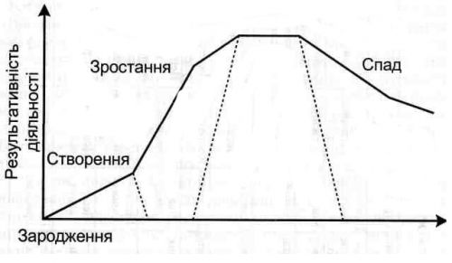

Змістовий модуль 2. Система атракцій та кластерів у світі
2.1. Розваги у світі
2.2. Дестинації та інвестування територій
2.3. Розвиток системи атракцій в Україні
2.4. Специфічні умови ефективності атракцій
У процесі еволюції кожна туристична дестинація проходить свій життєвий цикл:

Рис. 1. Життєвий цикл туристичної дестинації
Ресурси для виконання завдання
http://www.pngp.it/
https://www.ordesa.net/
https://sites.google.com/site/hudoznakultura11klasrozdil1/park-guela---arhitekturnij-sedevr-barseloni
http://shpark.com.ua/
http://www.alexandria-park.com.ua/
Завдання до 2 частини модульного дистанційного контролю:
За зразком рис.1 вкажіть, в якій точці знаходяться наступні туристичні дестинації (накресліть ці точки). Поясність свою відповідь.
Національний парк Гран-Парадізо, Італія
Національний парк Ордеса-і-Монте-Пердідо, Іспанія
Парк Гуеля, Іспанія
Шацький національний природний парк, Україна
Державний дендрологічний парк Національної академії наук України "Олександрія", Україна
По кожному з вказаних парків наведіть історичну довідку, сезонну гістограму відвідування.